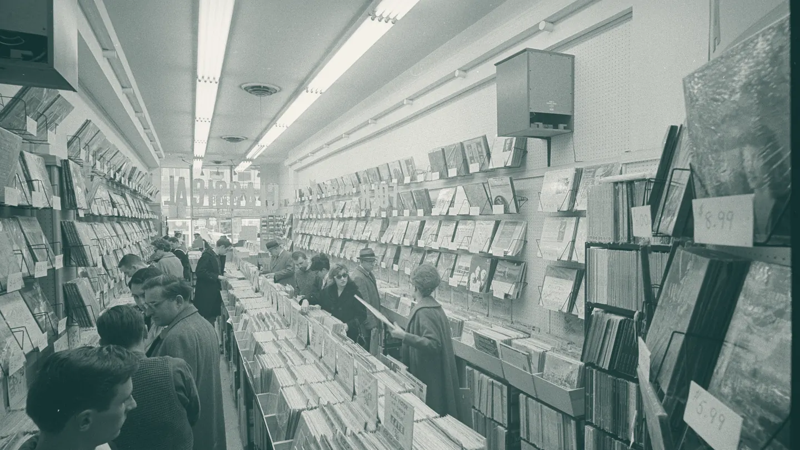

Tonight, 20:00 Kind of Blue,
both sides
Sound on. What you hear is the crackle and hum of the room, made live in your browser. The music itself is for the room.
This week in the room
One album a night, both sides, start to finish. Twenty-four seats.
-
Tuesday
3 November
20:00
Waltz for Debby
Bill Evans Trio, 1962
-
Wednesday
4 November
20:00
Moanin’
Art Blakey and the Jazz Messengers, 1958
-
Thursday
5 November
20:00 Tonight
Kind of Blue
Miles Davis, 1959
-
Friday
6 November
20:00
A Love Supreme
John Coltrane, 1965
-
Saturday
7 November
20:00
Somethin’ Else
Cannonball Adderley, 1958
-
Sunday
8 November
17:00
Getz/Gilberto
Stan Getz and João Gilberto, 1964
Sunday starts early, at 17:00.
How the room works
Side one
Arrive by quarter to.
The door closes when the needle drops.
Phones face down.
Screens stay dark and photographs wait until the side ends.
Side two
Quiet while it plays.
Talk at the bar between sides, never over them.
Requests on the card.
Write one on the card at the bar for next month’s list.
The system
Restored, not new. Everything in the chain is older than most of the records.
- Two turntables
- Belt-driven decks from the early 1970s, one for each side, so nothing waits.
- A valve amplifier
- Built in 1968 and rebuilt by hand in 2024, about eight watts a channel.
- Horn loudspeakers
- Large, efficient and quick, the kind the Tokyo listening cafés favoured.
- A cork-lined room
- Twenty-four seats, all facing the speakers, none facing each other.
New in the racks
Second-hand, cleaned and graded by hand. Prices include a new inner sleeve.
| Number | Album and artist | Pressing | Grade | Price |
|---|---|---|---|---|
| A1 | Blue TrainJohn Coltrane | 1970s reissue | VG+ | £28 |
| A2 | Mingus Ah UmCharles Mingus | UK pressing | VG | £24 |
| A3 | Time OutThe Dave Brubeck Quartet | UK pressing | VG+ | £22 |
| A4 | Speak No EvilWayne Shorter | 1980s reissue | NM | £32 |
| Number | Album and artist | Pressing | Grade | Price |
|---|---|---|---|---|
| B1 | Saxophone ColossusSonny Rollins | 1970s reissue | VG+ | £26 |
| B2 | Night TrainOscar Peterson Trio | UK pressing | VG | £18 |
| B3 | Maiden VoyageHerbie Hancock | 1980s reissue | NM | £30 |
| B4 | Ellington at NewportDuke Ellington | UK pressing | VG+ | £20 |
Grades: NM near mint, VG+ very good plus, VG very good.
Book a seat
Seats are held until ten to eight, then given to the queue.
24 seats a night, all facing the speakers
Visit
- Address
- Unit 3, Larch Yard, London E8 (made up)
- Hours
- Tuesday to Sunday, 12:00 to 23:00. Closed Mondays.
- Shop
- The racks are open all day; the room opens for each session.
- Getting there
- Five minutes from the Overground station.